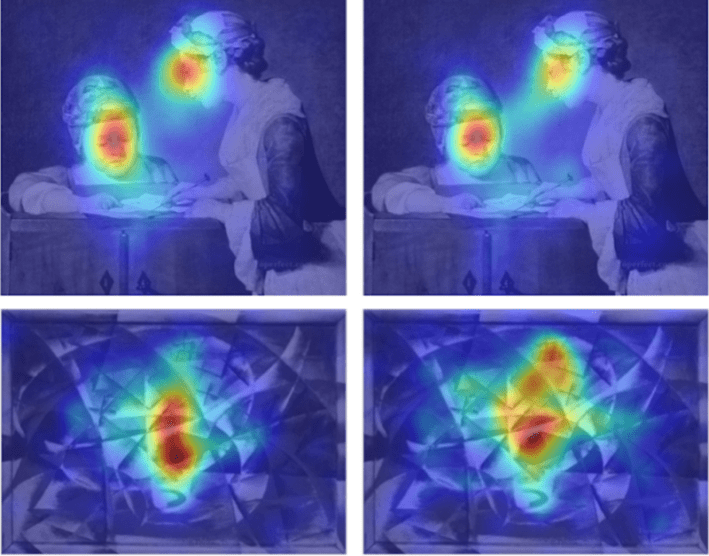

How do psychedelics change what we see? Many scientists have tried to answer this question by pairing large-scale brain scans with self-reports from tripping study participants. But few people have looked into the mediators of this realm: the eyes.
So a team of researchers set out to discover: Where does the gaze go on psychedelics?
To do that, they went to people’s homes with eye-tracking equipment and pills of dried psychedelic mushrooms (from Psilocybe cubensis). Then they showed people 30 different paintings while they tripped—and watched what happened.
The study participants, of course, had volunteered for the study and been evaluated first. (They’d all taken mushroom psilocybin at least twice before—and got two different study visits: one on a very low-dose, as an “active” control, and another on a high-dose as the experimental condition.)
“What a labyrinth of endlessly significant complexity!”
The artwork for the study was not your usual psychedelic aesthetic fare. (Not a fractal in sight!) One painting, The Young Schoolmistress, by Jean-Siméon Chardin, was painted in the 1730s, and shows in muted rococo style, a quiet, classical moment of instruction. Another, Abstract Speed + Sound by Giocomo Balla from the first half of the 1910s is a Futurist painting that translates the experience of seeing and hearing a new car, through oil paint, into geometric shapes. The rest of the 30 works ranged in date from the 1400s to the mid 20th century.
What happened when the scientists analyzed the data from the eye-tracking experiments was not what they expected. One of the leading theories about these sorts of psychedelics—known as serotonergic psychedelics, which impact serotonin receptors that can alter perception—is that they work, in part, by relaxing expectations, allowing people to break free from standard ways of looking at things. The scientists presumed this would result in more chaotic, wild visual roving around the artworks.
The “active control” low-dose psilocybin showed people looked around paintings about as expected, for example, focusing on the faces of the two individuals in The Young Schoolmistress painting as well as the relation of the two figures.
But on the high-dose of psilocybin, people’s eyes tended to wander around less rather than more—instead locking in even more to focal details, such as the faces in that painting. This was equally the case in a more visually scattered painting, like Abstract Speed + Sound: People’s visual focus really zeroed in on the most central part of the painting, rather than dancing around it more widely (as they did on the low-dose control).

THE EYES HAVE IT: Using eye-tracking technology, scientists studied how people looked at paintings while on high doses of psilocybin (left column) versus a very low, active-control dose (right column). Averaging the data and displaying it with heat maps over the paintings (top: The Young Schoolmistress; bottom: Abstract Speed + Sound) reveals that people on the psychedelic tend to focus much more intensely on smaller areas. Image from Muller, S., et al. (2025).
The results might have been a surprise based on scientific literature. But they might not be a surprise based on experience. People on psychedelics often report fixation on visual details of the smallest sort, usually passed over by the day-to-day perceiving mind. Or as the writer and philosopher Aldous Huxley described in his 1954 The Doors of Perception: “I looked down by chance, and went on passionately staring by choice, at my own crossed legs. Those folds in the trousers—what a labyrinth of endlessly significant complexity! And the texture of the grey flannel—how rich, how deeply, mysteriously sumptuous!” (Credit to the study authors for pulling this quote.)
Although psychedelics seemed to increase participants’ focus on parts of the paintings as well as self-reported feelings of flow, the drugs did not seem to make people like the paintings any more than they did at the very low-dose baseline.
Curious to know more? The study authors lay it all out in their paper, which was published this summer in Scientific Reports, as well as in the supplementary material. But if you want a quick rundown of how the experiment went down, here it is:
The research team met each person at a home of the participant’s choosing on two different days, a month apart. With them each time the researchers brought their eye-tracking gear, a monitor to display the artworks, and a capsule of either 0.5 grams of dried psychedelic mushrooms (acting as a sort of baseline control) or 3 grams. Neither the participants nor the research team knew at the time which dose a participant had received.
About an hour after taking the pill, participants were shown the famous—but not too famous—works of art on the monitor in a random order, for 30 seconds each. The eye-tracking equipment captured where people’s eyes moved and where they rested. Compiling the data and averaging it, the researchers could create a heat map to see how people’s visual engagement changed with the higher dose. They were also asked to describe the intensity of their perceptions—things like: “Edges seem warped,” “I see geometric patterns,” “My sense of time and space is distorted.”
As a caveat, it was a small study—just 15 people completed all steps of the study, most of whom were male and in their early-to-mid 30s. The researchers acknowledge that this study was “exploratory”—hence the casual testing environments and small group. But it’s an early step in learning how psychedelics shift what we see—and how we look. 
Lead image: Nina_Susik / Shutterstock
Källförteckning
- Originalartikel: https://nautil.us/looking-at-art-on-psychedelics-1232564/